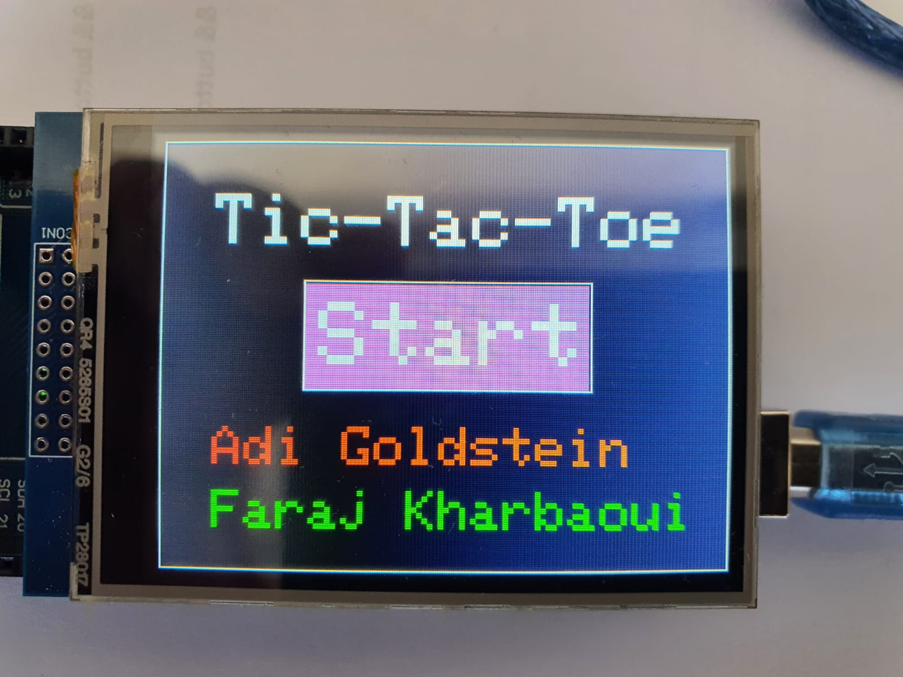

נגיעה אחת, מהלך אחד
מיפוי אזורי המגע לתשע המשבצות של הלוח.
איקס עיגול לשני שחקנים, על מסך מגע אמיתי. בוחרים משבצת, שומעים תגובה ומגלים מי השלים ראשון שורה של שלושה.

01 / מסך הפתיחהמה עומד מאחורי המשחק
במרכז הפרויקט עומד לוח איקס עיגול מוכר, אבל הפעם הוא פועל כמכשיר פיזי. מסך המגע מציג את תשע המשבצות וקולט את הבחירה של כל שחקן. הקוד מנהל את התורות, מונע בחירה במשבצת תפוסה ובודק ניצחון או תיקו.
כל מהלך מקבל צליל משלו, ובסוף המשחק מוצגת תוצאה על המסך ונשמעת מנגינה. לאחר מכן אפשר להתחיל סיבוב נוסף.
מיפוי אזורי המגע לתשע המשבצות של הלוח.
סימון X ו־O לסירוגין, בדיקת משבצות תפוסות וזיהוי שורה מנצחת.
משוב קולי בזמן המשחק ומסך סיום לניצחון או לתיקו.
מבט מקרוב
מסך, רכיבים ומשחק אחד שמתקיים מחוץ למחשב.


מתחת למכסה
הסקיצה נכתבה עבור Arduino Mega 2560 ומשלבת ציור על צג TFT, קריאת קלט ממסך מגע והפעלת זמזם.
נוגעים במשבצת פנויה
הסימן מופיע ונשמע צליל
המשחק בודק ניצחון או תיקו
מציגים תוצאה ומתחילים מחדש
לראות את זה קורה
הדגמת וידאו של הפרויקט הפיזי. הפעילו את הנגן כדי לראות את המשחק על המכשיר.
עכשיו תורכם
הדמיה קטנה בדפדפן של חוקי המשחק. שני שחקנים יכולים לבחור משבצות בתורות ולנסות להגיע לשלושה ברצף.
התור של X